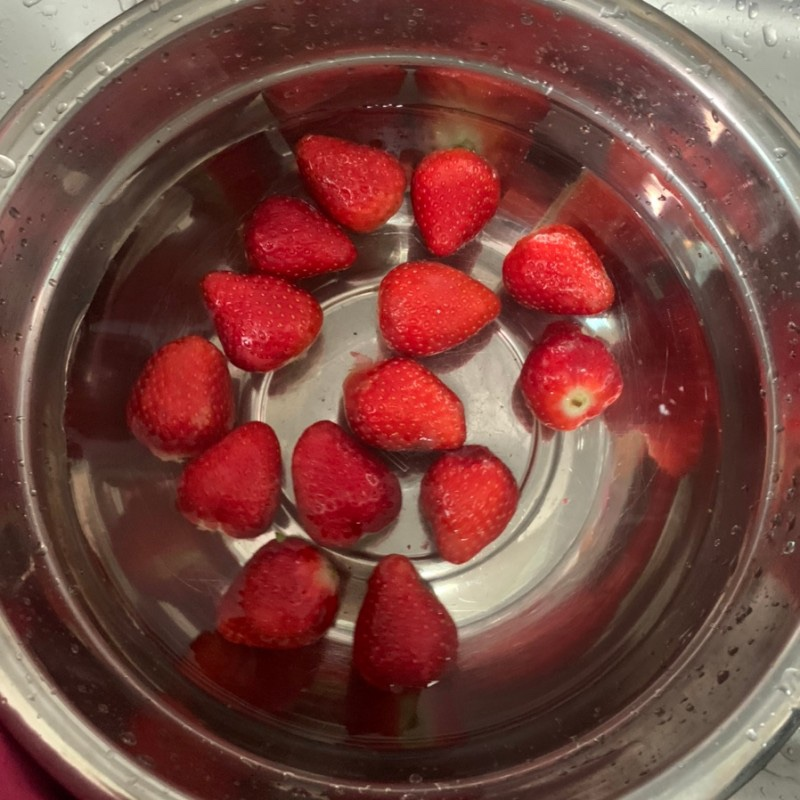
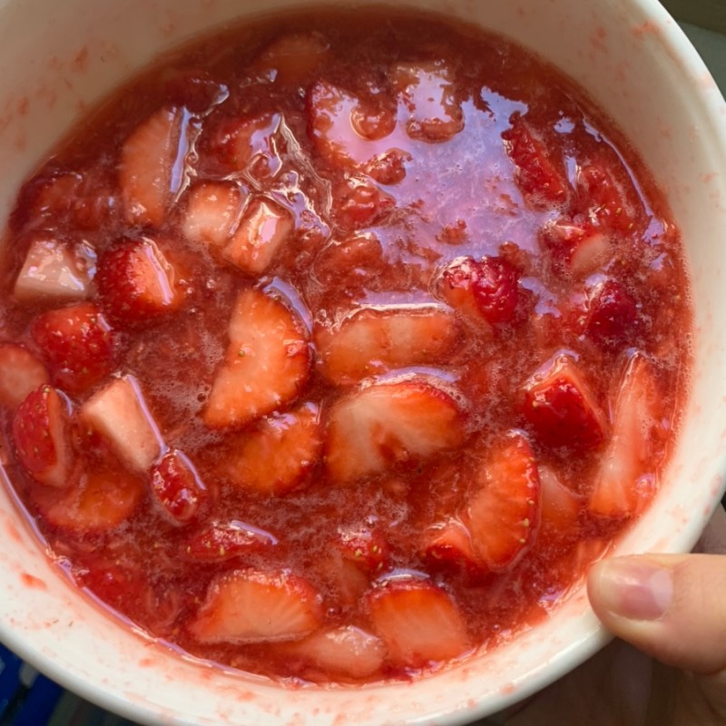
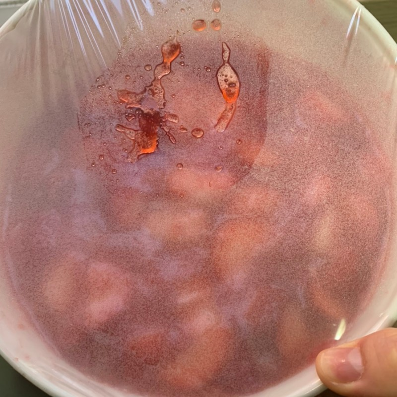
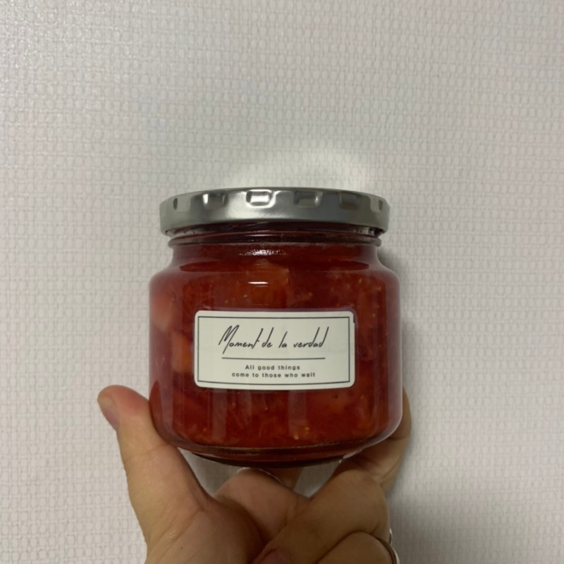
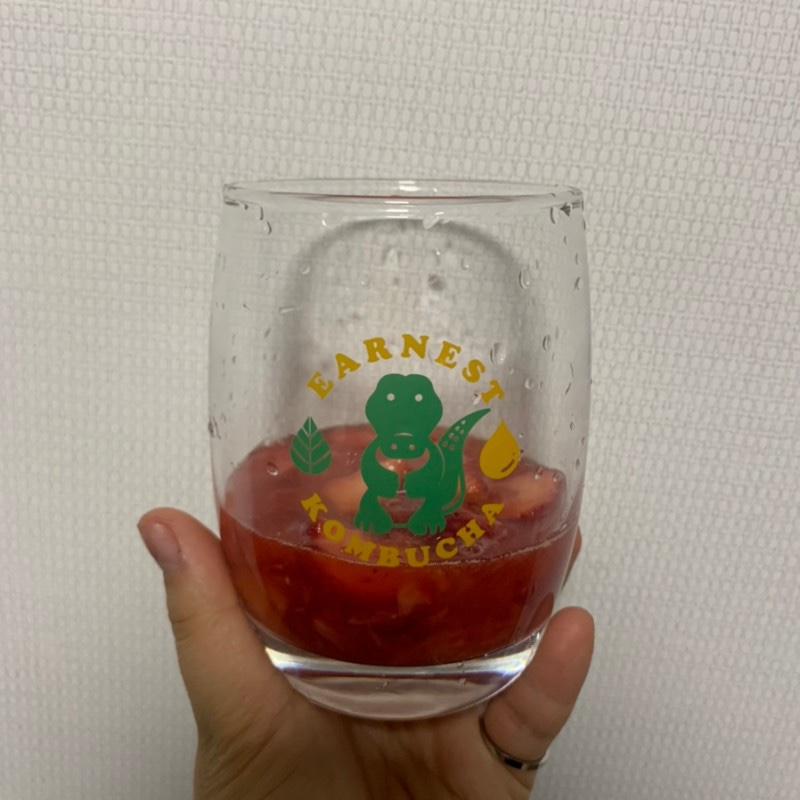
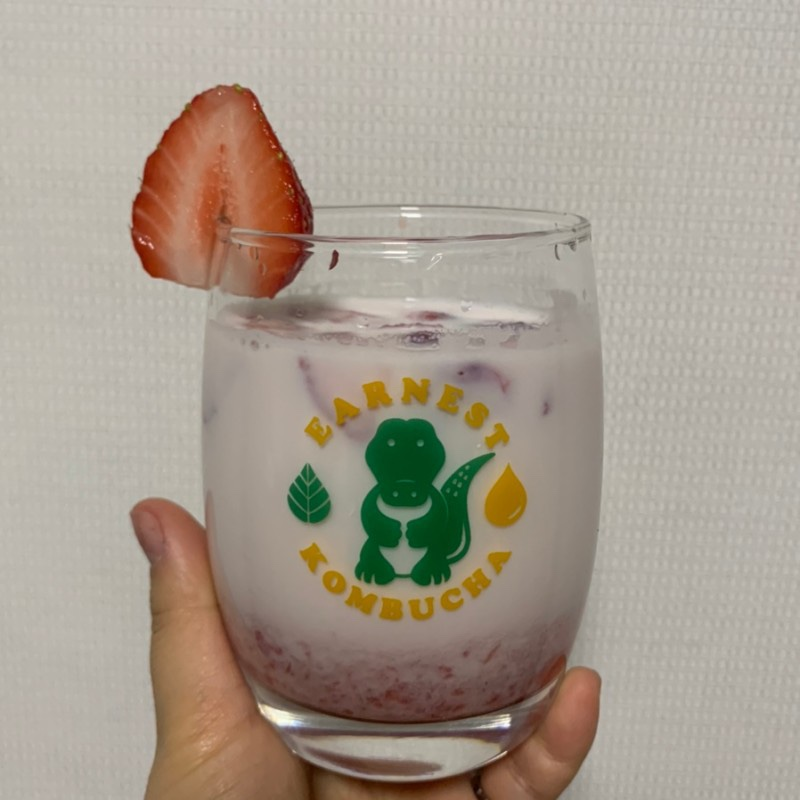
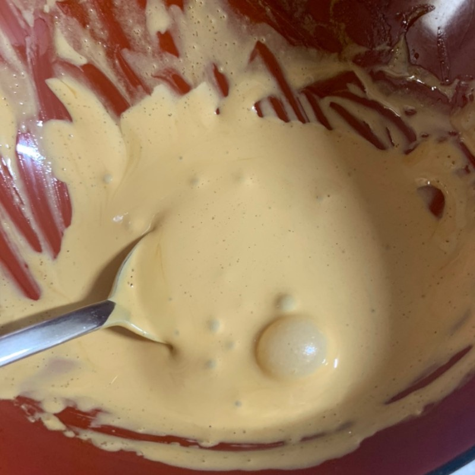
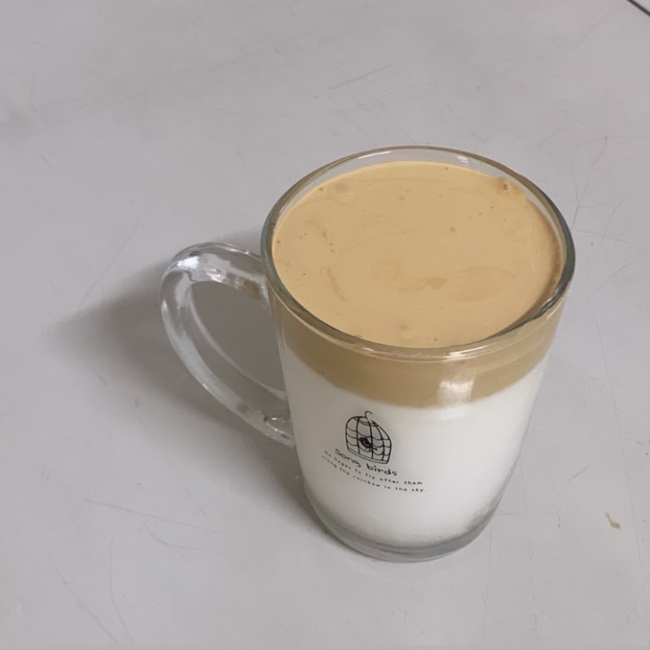

딸기청 & 딸기라떼
준비물 : 딸기, 우유, 설탕
먼저 딸기청을 만들어보겠습니다!
1. 먼저 딸기를 씻고 소독을 해주기 위해 식초물에 딸기를 넣어줍니다.
2. 딸기를 2/3의 딸기를 으깨고 설탕도 딸기 비율에 비슷하게 넣어줍니다. 1/3의 딸기는 어느정도 씹히는 정도로 잘라주세요.
3. 랲을 씌우고 냉장고에 30분정도 숙성을 시켜줍니다.
4. 딸기청을 예쁜 병에 담아주면 완성됩니다.
이제 딸기라떼를 만들어보겠습니다.
1. 컵에 1/4의 딸기청을 널어줍니다.
2. 그 다음 우유를 기호에 맞게 넣어주면 완성입니다.
달고나커피
준비물 : 커피, 우유, 뜨거운 물, 설탕
1. 먼저 커피, 설탕, 뜨거운 물을 넣고 가볍게 저어줍니다.
2. 손으로 저으셔도 되고, 거품기가 있으신 분들은 거품기를 사용하시면 편하게 하실 수 있습니다.
3. 계속 저어주다 보면 달고나 색이 나오기 시작합니다. 그리고 걸쭉한 농도가 되면 잘 만드신 겁니다.
4. 마지막으로 컵에 우유를 따르고 그 위에 저어 놓은 달고나커피를 올려주면 완성입니다. 저어서 마시면 됩니다.
